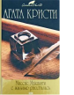

Смерть под развалинами во время бомбежки, убийство в маленькой сельской гостинице странного незнакомца, схватка за наследство между юной вдовой и родственниками миллионера, дело о пропавшем без вести муже... В калейдоскоп событий оказывается втянут даже сам Эркюль Пуаро. Но природная наблюдательность к мелочам поможет великому сыщику распутать клубок загадок. Во втором романе, вошедшем в этот том, маленькому бельгийцу придется расследовать убийство пожилой служанки. Кому могла помешать тихая и незаметная старушка?